798 doctors died during second wave of Covid-19 across country; maximum lost their lives in Delhi: IMA
NEW DELHI: Amidst the prevalence of the Covid-19 pandemic, the Indian Medical Association on Tuesday said that 798 doctors died during the second wave of Covid-19
across
the country of which maximum 128 doctors lost their lives in Delhi, followed by Bihar at 115.
As per the official note by the IMA, the number of doctors who lost their lives in the pandemic in Delhi stands at 128, followed by Bihar at 115 and Uttar Pradesh at 79.
States like Maharashtra and Kerala where the prevalence of the Delta Plus variant of Covid-19 is on a rise also reported deaths of doctors in double digits. Maharashtra reported 23 doctor deaths and Kerala reported
24 deaths.
IMA COVID REGISTRY- SECOND WAVE STATE WISE DOCTORS MARTYRS
S.No
States
Number of Death
01
Andhra Pradesh
40
02
Assam
10
03
Bihar
115
04
Chattisgarh
7
05
Delhi
128
06
Gujarat
39
07
Goa
2
08
Haryana
19
09
Jammu and Kashmir
3
10
Jharkhand
39
11
Karnataka
9
12
Kerala
24
13
Madhya Pradesh
16
14
Maharashtra
23
15
Manipur
6
16
Odisha
36
17
Pondicherry
1
18
Punjab
3
19
Rajasthan
44
20
Tamil Nadu
51
21
Telangana
37
22
Tripura
2
23
Uttar Pradesh
79
25
West Bengal
62
26
Unknown
1
Total Martyrs
798
Karnataka: 28 doctors died in second wave
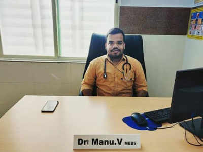 BENGALURU: A 27-year old doctor working at a primary health centre in , Chikkballapur district, succumbed to on Wednesday. Dr Manu V, who graduated from in 2012, was a Covid warrior
working as medical officer in Burudugunte PHC. Dr Manu, who is from Chintamani, was diagnosed with Covid-19 two weeks back and was under treatment in a Bengaluru hospital. His batchmates remember him for overcoming physical disabilities to
serve the poor and needy. He was born with congential bone disease called Rickets and required support to move around. He died despite being was fully vaccinated against Covid, members of Resident Doctors Association said. The assocation demanded
that the government must assist his bereaved family with compensation.
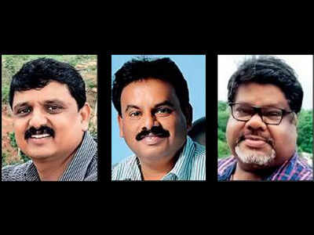 BENGALURU: Ever since the second wave of infections hit, Karnataka has lost three doctors — Dr GN Ganesh Kumar, 59, from Chamarajanagar, Dr Mahesh, a paediatrician from district
and Dr Ramegowda CC, 51, from Bengaluru — to Covid-19. All three had taken at least the first dose of the vaccine, their colleagues told TOI.
While Dr Ramegowda, founder and head of Rashi Diagnostic Centre, died on Thursday, Dr Ganesh, who worked as a medical officer in a general hospital in Kollegal taluk, breathed his last on Tuesday (April 27). Dr Mahesh, who worked
in Channapatna general hospital, also succumbed to the virus April 18.
Office-bearers of Karnataka Government Medical Officers’ Association ( ) confirmed the deaths, saying the incidents have raised concern over the safety of healthcare
professionals.
C Surendran, manager at Rashi Diagnostic Centre, told TOI that Dr Ramegowda’s family had contacted 22 hospitals, including private facilities, for a bed for him when his condition began deteriorating on April 11, three days after
he tested positive. Dr Ramegowda had taken the first dose of Covid vaccine and had been checking with many hospitals for the second dose in early April, colleagues said.
Dr Ramegowda finally got admission in a private hospital
in Banaswadi and his condition initially improved before rapidly declining. He required ventilator support and eventually suffered cardiac arrest on Wednesday. He was declared dead the next day.
Dr Ganesh tested positive on April
23 and was in home isolation. He developed breathlessness on April 26 and got oxygen at home. The same day he fell unconscious and was taken to Mysuru district hospital. Since his condition did not improve, he was shifted to a private hospital.
“He was declared dead on Tuesday. We learnt that Dr Ganesh had taken both doses of the vaccine, but we don’t know when he received the second dose. He was not willing to get hospitalised when he tested positive and wanted to be in home isolation
as his symptoms were not severe initially,” said Dr Somanna, president, KGMOA, Chamarajanagar district.
#SalutingTheCovidHeroes, A Special Townhall To Pay Tribute To Ordinary People For Their Extraordinary Contributions During COVID Crisis
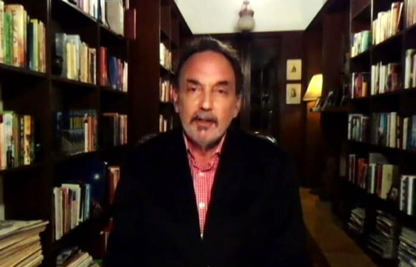 798When times got tough during the second wave of the COVID-19 crisis, many across India decided to step forward and take the lead in helping those is need. From providing food, oxygen,
medicines, ambulance services to those who helped with last rites of those who succumbed to the disease. #SalutingTheCovidHeroes Townhall is an attempt to honour these people who restored faith in humanity at a time when many were going through
trauma of death and suffering. Here are some highlights from the Townhall
'We have all been through a really excruciating period both physically and mentally and unfortunately, deeply emotionally', said Dr Prannoy Roy about the second wave of COVID-19 at NDTV-Dettol India's Saluting The COVID Heroes Townhall. Dr Roy sets the
agenda for the Townhall, to express gratitude to ordinary people who worked relentlessly and selflessly to help India cope with the pandemic.
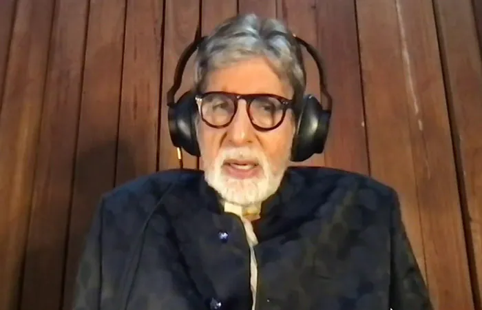 Campaign Ambassador Amitabh Bachchan, who got infected with COVID-19 last year in August and was admitted to a hospital, shared his experience of fighting the disease under expert
guidance and care. Lauding the spirit of healthcare workers, Mr Bachchan said, 'You cannot believe the kind of effort they all make to make you comfortable. They don't go home; 24 hour, round-the-clock, they are there in their suits, in their
attire, attending to you.'
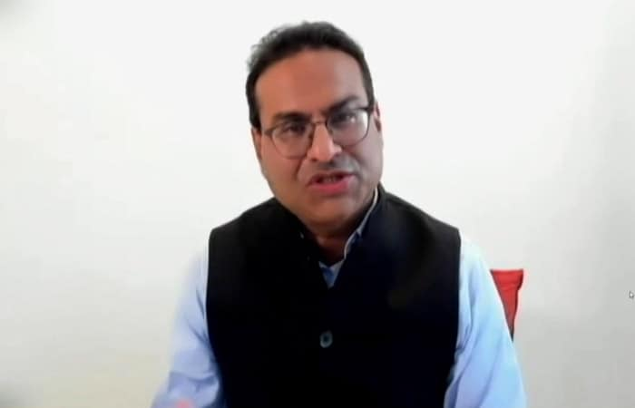 Laxman Narasimhan, CEO, Reckitt also joined the Townhall to pay his tribute to the COVID warriors. Appreciating the healthcare workers and other frontline warriors - people from the
community who stood up to be counted, Mr Narasimhan said, 'They have in a lot of ways stitched India together in so many wonderful ways.'
Gaurav Jain, SVP, South Asia, Reckitt too extended his support to the Townhall and highlighted the evolving role of Dettol during the two waves of the pandemic. When the pandemic began,
Dettol's role was to educate people about COVID-19 appropriate behaviour - handwashing with soap, wearing a mask and keeping a social distance. However, this year during the second wave, their role evolved to being a harbinger of hope.
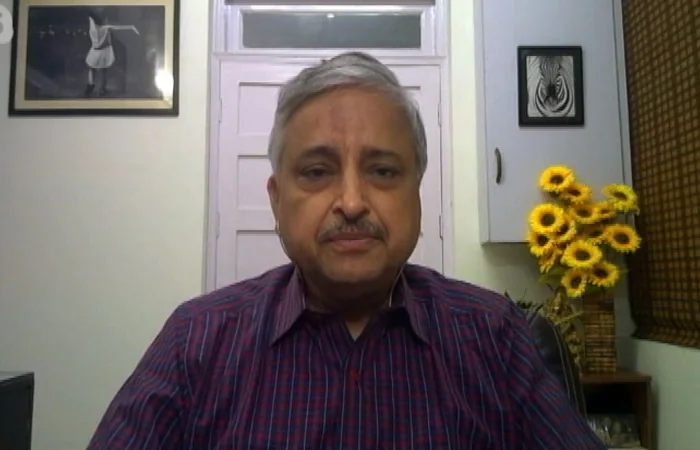 Dr Randeep Guleria, Director of AIIMS appreciated the resilience of Indian citizens in fighting the COVID-19 pandemic which he believes has been ‘very heartening for healthcare workers'.
Dr Guleria emphasised on following COVID precautions to prevent the subsequent waves of the pandemic and vaccination to reduce transmission.
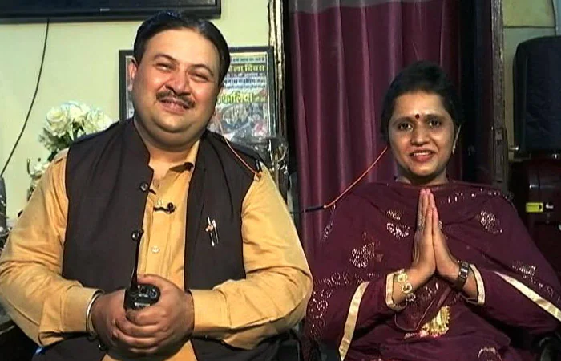 SalutingTheCovidHeroes, a special Townhall, featured some of the COVID-19 heroes; Himanshu and Twinkle Kalia, Delhi's ambulance couple being one of them. The husband-wife duo has
been running a free ambulance service for ferrying patients for almost two decades now. Going beyond the call of duty, the couple fetches medicines, arranges funerals and sometimes, steps in to perform last rites as well
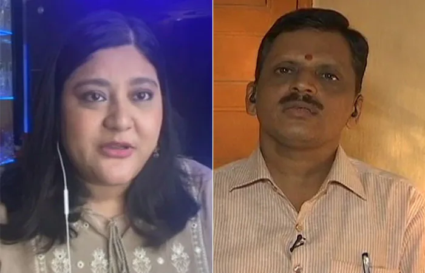 Various other heartwarming stories of love and care came up during the devastating second wave of the COVID-19 pandemic. Like the story of Ronita Krishna Sharma Rekhi, a lactating
mother of a four-month-old girl, from Assam. Ms Rekhi volunteered to breastfeed newborns who have either lost their mothers to COVID-19 or whose mothers have tested positive and are in isolation.
Similarly, Dattatraya Sawant, a school
teacher from Mumbai stepped up to help the coronavirus patients by providing a rickshaw service from hospital to home and vice versa for free.
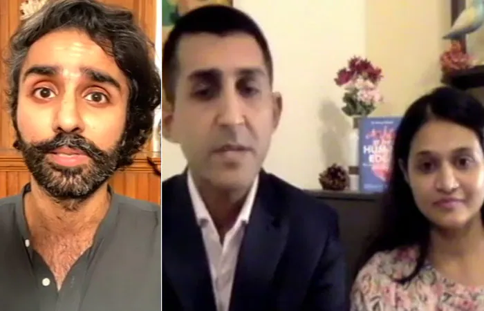 Another COVID warrior whose story inspired everyone is Dr Harmandeep Singh Boparai who after working in the US came back to India to help the country fight the second wave. The townhall
was also joined by a doctor couple from Mumbai - Dr Marcus Ranney and Dr Raina Ranney - who have extended a helping hand by providing medicines to people. Together they started Meds For More, a citizen-led initiative to collect unused or leftover
and unexpired medicines from COVID recovered patients and provide them to those in need and cannot afford it.
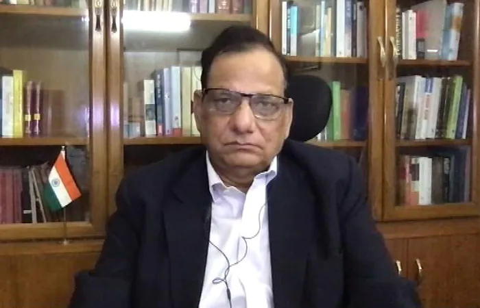 On #SalutingTheCovidHeroes Townhall, Dr VK Paul (Member), Health, NITI Aayog, shared the biggest learning from the two COVID waves, ‘never let the guard down' which essentially means
following the basic precautionary measures like wearing masks and maintaining social distaance. Dr Paul also called for ramping up the infrastructure to prepare for future waves.
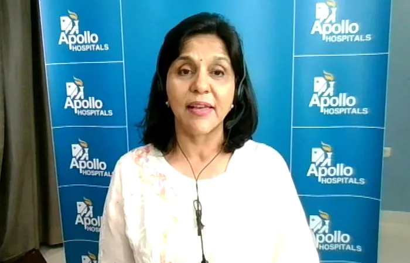 Sangita Reddy, Joint MD, Apollo Hospitals talked about the possibility of the third wave of COVID-19 and laid emphasis on breaking the vaccine hesitancy. Ms Reddy said that it's
important to send across the right message about vaccines that is vaccination may not prevent an individual from contracting COVID-19 but it can reduce the impact of the virus and prtotect people from severe illness.
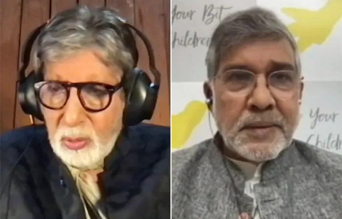 Nobel Laureate Kailash Satyarthi shed light on the impact of COVID-19 on children and called the pandemic a ‘crisis of the entire civilisation, childhood, innocence, and the crisis
of the future of the entire generation of the world'. Mr Satyarthi suggested preparing for the third wave keeping children in mind and also looking towards reopening schools.
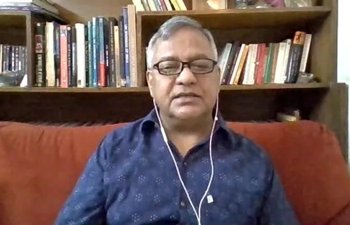 The impact of COVID-19 on children was discussed at length with Dr Amit Sen, Child and Adolescent Psychiatrist, and Director & Co-founder of Children First. Dr Sen talked about the
mental health of children and how the pandemic might have a deep-seated impact which may unfold over months, years and generations.
 NEW DELHI: Amidst the prevalence of the Covid-19 pandemic,
NEW DELHI: Amidst the prevalence of the Covid-19 pandemic,